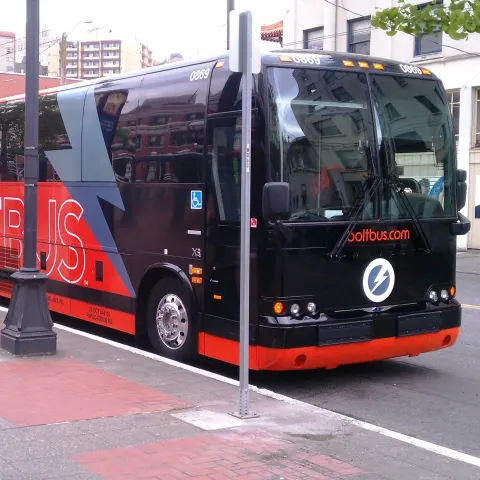

Explore Transportation in Taniti
Air Travel
Almost all visitors arrive to Taniti by air, though some arrive on a small cruise ship that docks in Yellow Leaf Bay for one night per week. Taniti is served by a small airport that can accommodate small jets and propeller planes. Taniti is in the process of expanding the airport so larger jets will be able to land on the island within the next few years.
Ground Transportation
Public buses serve Taniti City and run from 5 a.m. to 11 p.m. every day. Private buses serve the rest of the island. Taxis are available in Taniti City, and rental cars can be rented from a local rental agency near the airport. Bikes and helmets are available to rent from several vendors (helmets are required by law). Taniti City is fairly flat and very walkable. Many tourists stay in the area surrounding Merriton Landing: this area is easy to explore on foot.
Other Transportation Options
For those looking for an adventurous way to explore the island, consider renting a scooter or motorbike. These are popular options for tourists who want the freedom to explore at their own pace. Additionally, boat rentals are available for island-hopping and exploring Taniti’s stunning coastline.
Guided transportation tours, including scenic bus rides and boat cruises, are also available for visitors who want a curated experience of Taniti’s beauty and culture.
Transportation Highlights
- Airport: Small jets and propeller planes, with expansion plans for larger jets.
- Buses: Public buses in Taniti City and private buses for the rest of the island.
- Taxis: Readily available in Taniti City.
- Rental Options: Cars, bikes, and scooters available near the airport and Merriton Landing.
- Boat Rentals: For exploring the coastline and nearby islands.